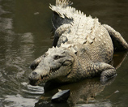
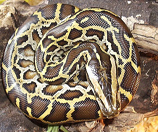
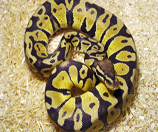

Cocodrilo Americano
Habita en lagos, pantanos y lagunas dulces y saladas. Antiguamente existía en todas las costas y lagunas costeras de la isla, pero actualmente solo se encuentra una población en el Lago Enriquillo.
Se llaman así porque se desplazan arrastrándose. Son un grupo de vertebrados recubiertos de escamas duras.

Habita en lagos, pantanos y lagunas dulces y saladas. Antiguamente existía en todas las costas y lagunas costeras de la isla, pero actualmente solo se encuentra una población en el Lago Enriquillo.

Se alimenta de aves y pequeños mamíferos. Cuando son adultos pueden medir hasta 20 pies de longitud, y es una especie muy común en los zoológicos debido a su atrayente color y tamaño.

La pitón real es propia de África tropical. También se la conoce con el nombre de "pitón bola", pues suele enrollarse sobre sí misma metiendo la cabeza en el centro, haciéndose una bola. Es un animal muy fuerte y de fácil mantenimiento, ya que no necesita mucho espacio y no crece demasiado.
El cocodrilo en su hábitat natural, en impresionante 4K y libre de derechos.